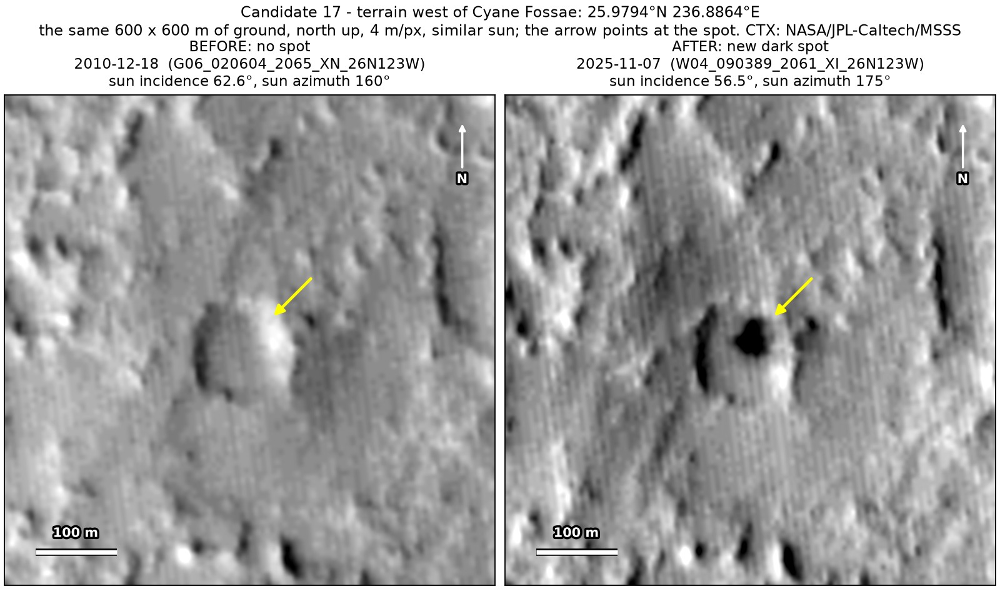
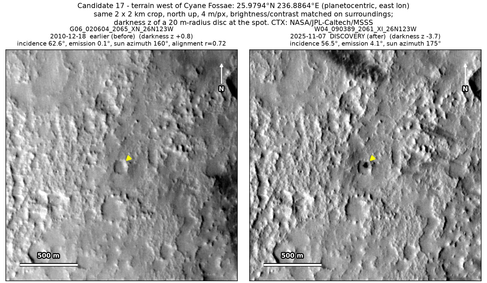
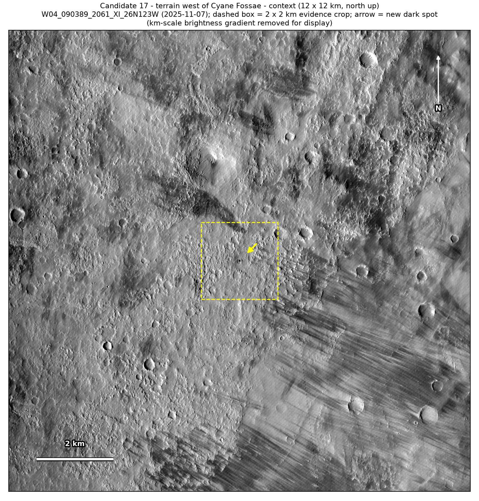
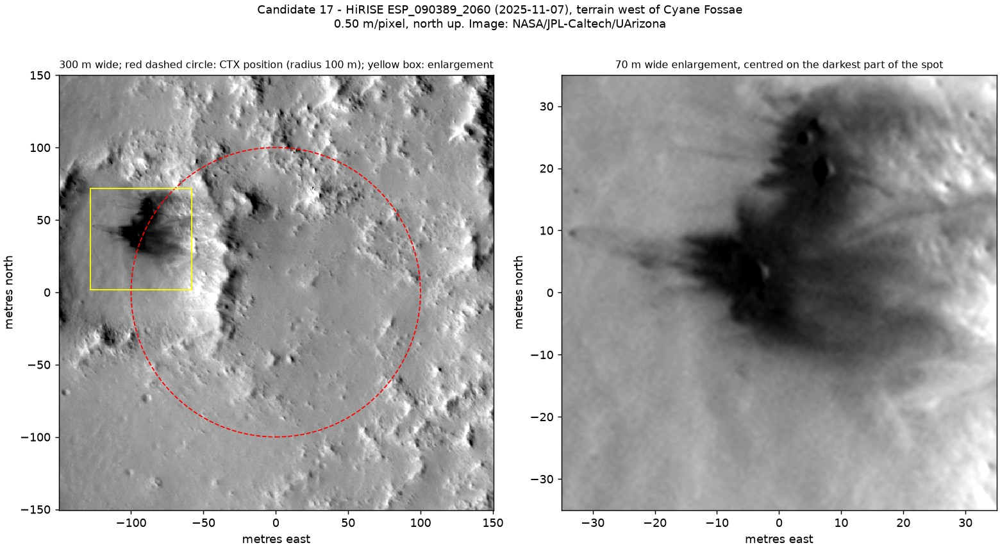
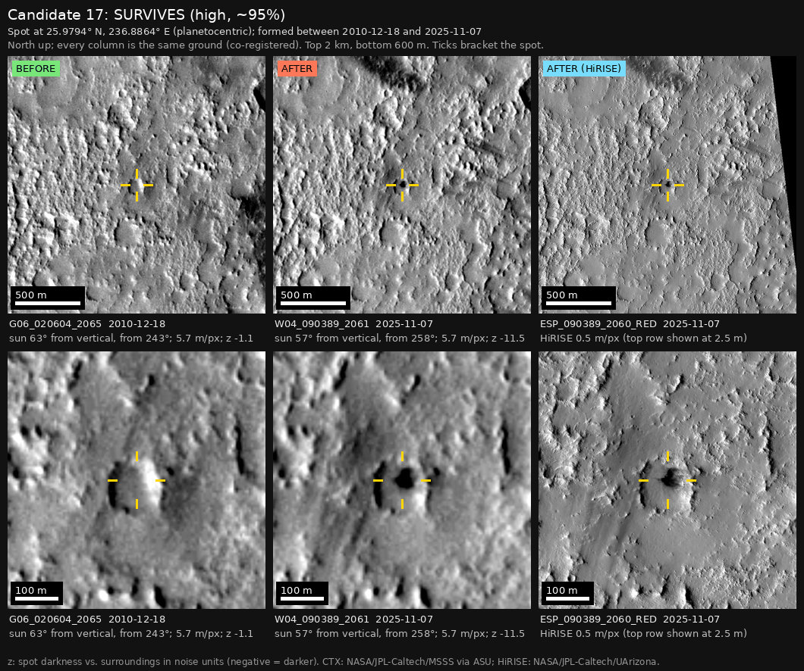
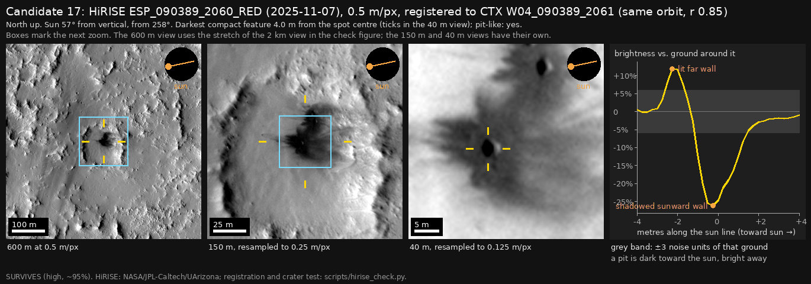

Professor of Mathematics
Paata Ivanisvili
Department of Mathematics, University of California, Irvine

← Possible new impact sites on Mars
Candidate 17: West of Cyane Fossae
Strong · roughly 95%

What changed. A black blob appeared inside a hollow about 100 m wide west of Cyane Fossae, some time between December 2010 and November 2025. The only earlier CTX image, from December 2010, shows sunlit ground there.
Why it may be a new impact. By chance, NASA’s HiRISE camera photographed the spot on the same orbit as the November 2025 CTX image. It shows at least three fresh pits, only 2 to 3 m across, with dark rays around them: the mark of a small meteoroid that broke apart just before it hit the ground. A dark streak on the hollow’s wall, the main look-alike, would not have pits with rays at its head.
- Location
- 25.979° N, 236.886° E (123.114° W)
- Absent
- 18 December 2010
- Present
- 7 November 2025 (CTX and HiRISE)
- Size
- Black blob 40 to 50 m across; HiRISE shows at least three pits 2 to 3 m across inside it
- Confidence
- Strong candidate; roughly 95% that it is a new impact.
- Caveat
- Only one CTX image shows it, and none was taken between December 2010 and November 2025, so when it formed is known only to within 15 years. Like every candidate here, it is unconfirmed: see the caveat.




